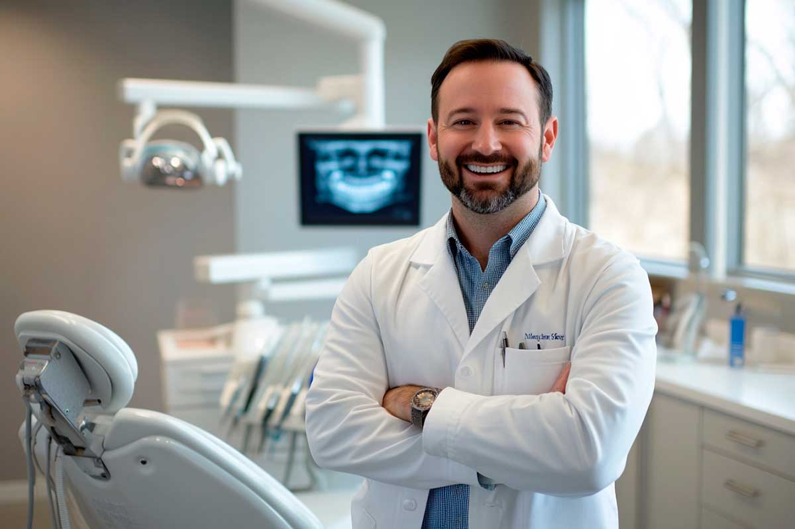
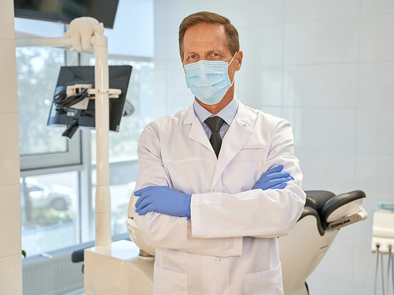

Cuidado dental profesional para una sonrisa sana y confiable.
Este sitio es un ejemplo de diseño web para consultorios dentales.
Quiero una página como estaSobre el dentista
El Dr. Juan Pérez ofrece atención odontológica profesional enfocada en la prevención, diagnóstico y tratamiento de problemas dentales. Su objetivo es brindar tratamientos seguros, cómodos y personalizados para mejorar la salud bucal y la estética de la sonrisa de cada paciente.
Tratamientos dentales
Limpieza dental
Profilaxis profesional para mantener dientes y encías saludables.
Blanqueamiento
Tratamiento estético para mejorar el color natural de los dientes.
Tratamiento de caries
Restauración dental segura para recuperar la salud de tus piezas.
Revisión general
Evaluación profesional para detectar y prevenir problemas dentales.
Consultorio


Ubicación
Av. Reforma 123, Ciudad de México
Lunes a Viernes · 9:00 AM – 6:00 PM
¿Quieres una página así para tu consultorio dental?
Te ayudamos a tener una web profesional, moderna y optimizada para generar confianza en tus pacientes.
Solicitar página